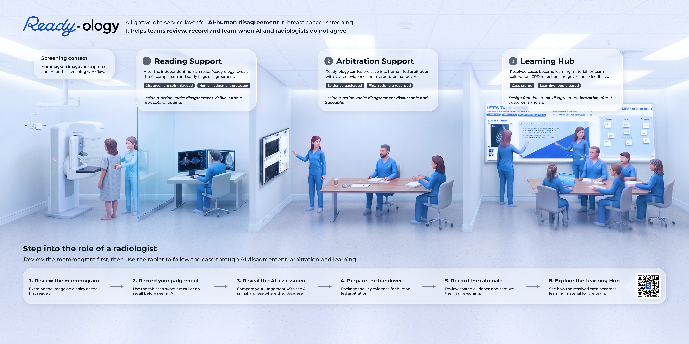

/ Finding
Points accumulated too slowly.
We proposed expanding customer perks to drive loyalty.
Individual reflection / 2025–2026
Deeply understand users
+Identify insights
+Design the service
= Deliver transformation.01 / The starting point
Great ideas are only a tiny fraction of the puzzle.
“Through group work, I saw that people can use the same methods and still produce very different results.”
02 / Contents

Points accumulated too slowly.
We proposed expanding customer perks to drive loyalty.
We translated a user complaint directly into a solution, overlooking the commercial calculations, operating costs and broader strategy governing Clubcard.
“What should we design?”
How critical is this problem? To whom does it matter? Why does the system operate this way?


.png)
Solution iteration
A compelling idea can still add work to an already stretched organisation.


Community-led change
Key takeaway
As non-medical and non-AI experts, direct clinical field observation was inaccessible.
Positioning shift / Keep scrolling
Not: “How can we optimise AI accuracy?”

“Too idealistic; hospitals lack the underlying infrastructure.”
“Future screening paradigms will evolve—perhaps through genetic testing.”
We designed a generic future while missing the concrete implementation path.
03 / What design can and cannot do
A user complaint is not the same as understanding the business system behind it.
Audience needs must be balanced with the organisation’s operational capability.
Without a concrete implementation scenario, elegant design remains an ivory tower.
There must be someone to fund it, support it, maintain it and take responsibility for it.
04 / Mindset shift
Test ideas first. Learn through trial and iteration.
Continue researching. Prioritise exhaustive investigation upfront.
“While others were already executing, I was still preparing.”
05 / My next step
What drives me is building from 0 to 1—participating in decisions, rapid testing and real-world execution.
Build hands-on industry experience, cultivate proactivity and learn to act in uncertainty.
Be someone who